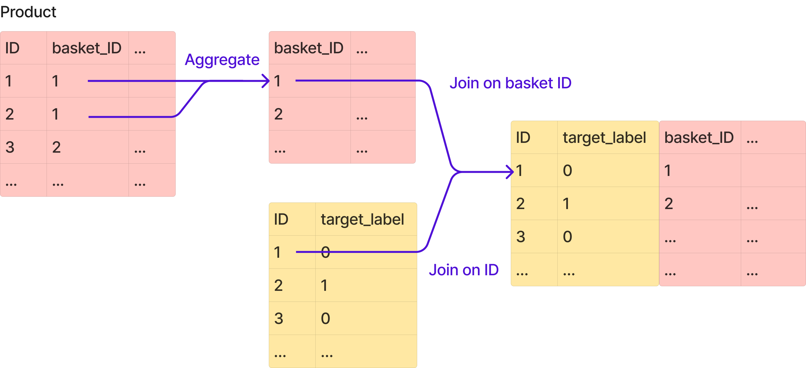

Note
Go to the end to download the full example code or to run this example in your browser via Binder.
AggJoiner on a credit fraud dataset#
Many problems involve tables whose entities have a one-to-many relationship.
To simplify aggregate-then-join operations for machine learning, we can include
the AggJoiner in our pipeline.
In this example, we are tackling a fraudulent loan detection use case. Because fraud is rare, this dataset is extremely imbalanced, with a prevalence of around 1.4%.
The data consists of two distinct entities: e-commerce “baskets”, and “products”. Baskets can be tagged fraudulent (1) or not (0), and are essentially a list of products of variable size. Each basket is linked to at least one products, e.g. basket 1 can have product 1 and 2.

Our aim is to predict which baskets are fraudulent.
The products dataframe can be joined on the baskets dataframe using the basket_ID
column.
Each product has several attributes:
a category (marked by the column
"item"),a model (
"model"),a brand (
"make"),a merchant code (
"goods_code"),a price per unit (
"cash_price"),a quantity selected in the basket (
"Nbr_of_prod_purchas")
import pandas as pd
from skrub import TableReport
from skrub.datasets import fetch_credit_fraud
bunch = fetch_credit_fraud()
products = pd.read_csv(bunch.products_path)
baskets = pd.read_csv(bunch.baskets_path)
TableReport(products)
TableReport(baskets)
Naive aggregation#
Let’s explore a naive solution first.
Note
Click here to skip this section and see the AggJoiner in action!
The first idea that comes to mind to merge these two tables is to aggregate the products attributes into lists, using their basket IDs.
products_grouped = products.groupby("basket_ID").agg(list)
TableReport(products_grouped)
Then, we can expand all lists into columns, as if we were “flattening” the dataframe.
We end up with a products dataframe ready to be joined on the baskets dataframe, using
"basket_ID" as the join key.
products_flatten = []
for col in products_grouped.columns:
cols = [f"{col}{idx}" for idx in range(24)]
products_flatten.append(pd.DataFrame(products_grouped[col].to_list(), columns=cols))
products_flatten = pd.concat(products_flatten, axis=1)
products_flatten.insert(0, "basket_ID", products_grouped.index)
TableReport(products_flatten)
Look at the “Stats” section of the TableReport above. Does anything strike you?
Not only did we create 144 columns, but most of these columns are filled with NaN, which is very inefficient for learning!
This is because each basket contains a variable number of products, up to 24, and we created one column for each product attribute, for each position (up to 24) in the dataframe.
Moreover, if we wanted to replace text columns with encodings, we would create
\(d \times 24 \times 2\) columns (encoding of dimensionality \(d\), for
24 products, for the "item" and "make" columns), which would explode the
memory usage.
AggJoiner#
Let’s now see how the AggJoiner can help us solve this. We begin with splitting our
basket dataset in a training and testing set.
from sklearn.model_selection import train_test_split
X, y = baskets[["ID"]], baskets["fraud_flag"]
X_train, X_test, y_train, y_test = train_test_split(X, y, stratify=y, test_size=0.1)
X_train.shape, y_train.shape
Before aggregating our product dataframe, we need to vectorize our categorical columns. To do so, we use:
MinHashEncoderon “item” and “model” columns, because they both expose typos and text similarities.OrdinalEncoderon “make” and “goods_code” columns, because they consist in orthogonal categories.
We bring this logic into a TableVectorizer to vectorize these columns in a
single step.
See this example
for more details about these encoding choices.
from sklearn.preprocessing import OrdinalEncoder
from skrub import MinHashEncoder, TableVectorizer
vectorizer = TableVectorizer(
high_cardinality=MinHashEncoder(), # encode ["item", "model"]
specific_transformers=[
(OrdinalEncoder(), ["make", "goods_code"]),
],
)
products_transformed = vectorizer.fit_transform(products)
TableReport(products_transformed)
Our objective is now to aggregate this vectorized product dataframe by
"basket_ID", then to merge it on the baskets dataframe, still on
the "basket_ID".


AggJoiner can help us achieve exactly this. We need to pass the product dataframe as
an auxiliary table argument to AggJoiner in __init__. The aux_key argument
represent both the columns used to groupby on, and the columns used to join on.
The basket dataframe is our main table, and we indicate the columns to join on with
main_key. Note that we pass the main table during fit, and we discuss the
limitations of this design in the conclusion at the bottom of this notebook.
The minimum (“min”) is the most appropriate operation to aggregate encodings from
MinHashEncoder, for reasons that are out of the scope of this notebook.
from skrub import AggJoiner
from skrub import selectors as s
# Skrub selectors allow us to select columns using regexes, which reduces
# the boilerplate.
minhash_cols_query = s.glob("item*") | s.glob("model*")
minhash_cols = s.select(products_transformed, minhash_cols_query).columns
agg_joiner = AggJoiner(
aux_table=products_transformed,
aux_key="basket_ID",
main_key="ID",
cols=minhash_cols,
operations=["min"],
)
baskets_products = agg_joiner.fit_transform(baskets)
TableReport(baskets_products)
Now that we understand how to use the AggJoiner, we can now assemble our pipeline by
chaining two AggJoiner together:
the first one to deal with the
MinHashEncodervectors as we just sawthe second one to deal with the all the other columns
For the second AggJoiner, we use the mean, standard deviation, minimum and maximum
operations to extract a representative summary of each distribution.
DropCols is another skrub transformer which removes the “ID” column, which doesn’t
bring any information after the joining operation.
from scipy.stats import loguniform, randint
from sklearn.ensemble import HistGradientBoostingClassifier
from sklearn.pipeline import make_pipeline
from skrub import DropCols
model = make_pipeline(
AggJoiner(
aux_table=products_transformed,
aux_key="basket_ID",
main_key="ID",
cols=minhash_cols,
operations=["min"],
),
AggJoiner(
aux_table=products_transformed,
aux_key="basket_ID",
main_key="ID",
cols=["make", "goods_code", "cash_price", "Nbr_of_prod_purchas"],
operations=["sum", "mean", "std", "min", "max"],
),
DropCols(["ID"]),
HistGradientBoostingClassifier(),
)
model
We tune the hyper-parameters of the HistGradientBoostingClassifier model using RandomizedSearchCV.
By default, the HistGradientBoostingClassifier applies early stopping when there are at least 10_000
samples so we don’t need to explicitly tune the number of trees (max_iter).
Therefore we set this at a very high level of 1_000. We increase
n_iter_no_change to make sure early stopping does not kick in too early.
from time import time
from sklearn.model_selection import RandomizedSearchCV
param_distributions = dict(
histgradientboostingclassifier__learning_rate=loguniform(1e-2, 5e-1),
histgradientboostingclassifier__min_samples_leaf=randint(2, 64),
histgradientboostingclassifier__max_leaf_nodes=[None, 10, 30, 60, 90],
histgradientboostingclassifier__n_iter_no_change=[50],
histgradientboostingclassifier__max_iter=[1000],
)
tic = time()
search = RandomizedSearchCV(
model,
param_distributions,
scoring="neg_log_loss",
refit=False,
n_iter=10,
cv=3,
verbose=1,
).fit(X_train, y_train)
print(f"This operation took {time() - tic:.1f}s")
The best hyper parameters are:
pd.Series(search.best_params_)
To benchmark our performance, we plot the log loss of our model on the test set against the log loss of a dummy model that always output the observed probability of the two classes.
As this dataset is extremely imbalanced, this dummy model should be a good baseline.
The vertical bar represents one standard deviation around the mean of the cross validation log-loss.
import seaborn as sns
from matplotlib import pyplot as plt
from sklearn.dummy import DummyClassifier
from sklearn.metrics import log_loss
results = search.cv_results_
best_idx = search.best_index_
log_loss_model_mean = -results["mean_test_score"][best_idx]
log_loss_model_std = results["std_test_score"][best_idx]
dummy = DummyClassifier(strategy="prior").fit(X_train, y_train)
y_proba_dummy = dummy.predict_proba(X_test)
log_loss_dummy = log_loss(y_true=y_test, y_pred=y_proba_dummy)
fig, ax = plt.subplots()
ax.bar(
height=[log_loss_model_mean, log_loss_dummy],
x=["AggJoiner model", "Dummy"],
color=["C0", "C4"],
)
for container in ax.containers:
ax.bar_label(container, padding=4)
ax.vlines(
x="AggJoiner model",
ymin=log_loss_model_mean - log_loss_model_std,
ymax=log_loss_model_mean + log_loss_model_std,
linestyle="-",
linewidth=1,
color="k",
)
sns.despine()
ax.set_title("Log loss (lower is better)")
Conclusion#
With AggJoiner, you can bring the aggregation and joining operations within a
sklearn pipeline, and train models more efficiently.
One known limitation of both the AggJoiner and Joiner is that the auxiliary data
to join is passed during the __init__ method instead of the fit method, and
is therefore fixed once the model has been trained.
This limitation causes two main issues:
1. Bigger model serialization: Since the dataset has to be pickled along with the model, it can result in a massive file size on disk.
2. Inflexibility with new, unseen data in a production environment: To use new
auxiliary data, you would need to replace the auxiliary table in the AggJoiner that
was used during fit with the updated data, which is a rather hacky approach.
These limitations will be addressed later in skrub.
Estimated memory usage: 0 MB